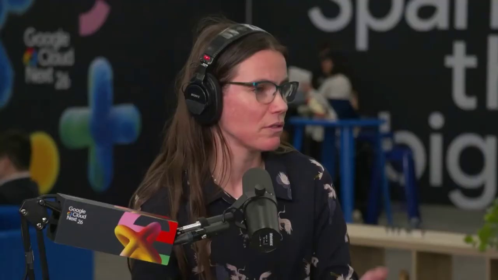
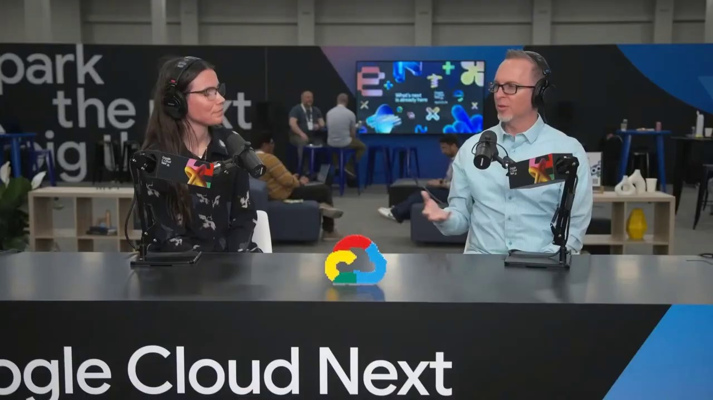
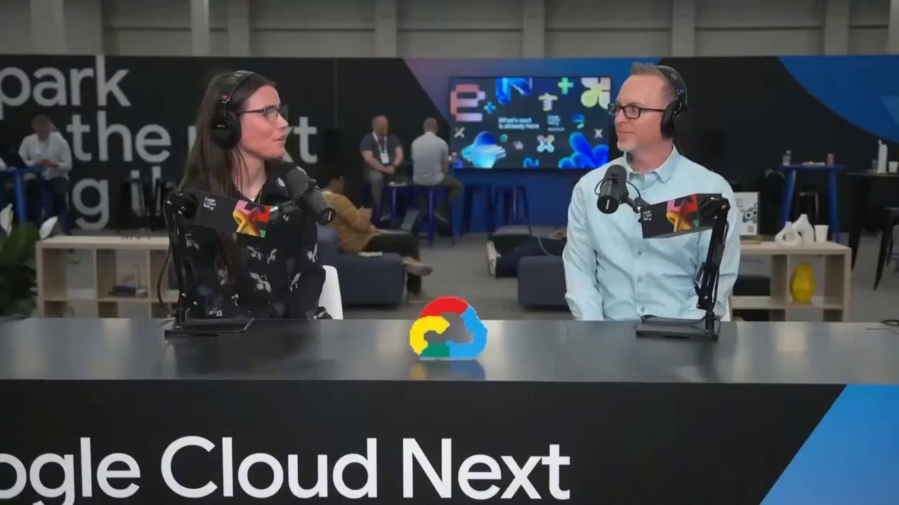

Key Moments



Summary & Script
Stop over engineering your AI dev setup and just start
Source: https://www.youtube.com/watch?v=nupw_OHAL9I
Video ID: nupw_OHAL9I
Overview
This is a Next '26 GDE Lounge interview in which Aja Hammerly talks with Richard Seroter about how he actually uses Google's AI developer tooling day to day. Rather than surveying the whole product portfolio, the conversation focuses on Seroter's real workflows: keeping a CLI open for one-off grounded questions, orchestrating Antigravity, a browser, and Stitch together to build frontends he could never hand-write, and using agents to learn unfamiliar frameworks and languages. The through-line is that the tooling's value is trusted, current information plus compressed learning loops, not elaborate harness setups. The video closes with Seroter's advice for beginners: pick one entry point, ship something, and expand your setup only after accumulating wins.
Speakers & Guests
- Aja Hammerly — Developer Relations (Google), host of the segment; frames the questions and shares her own parallel experience learning Go and building Go agents.
- Richard Seroter — Google developer advocate/builder; the primary subject, demonstrating his CLI, Antigravity, and Stitch workflows and offering the "don't over-engineer your setup" argument.
New Features & Announcements
- Developer Knowledge API — Grounds CLI answers in current official documentation rather than stale model training data or web search; Seroter calls this the most underrated value of the setup.
- Go Docs in the Developer Knowledge API — Documentation set pulled in beyond Google Cloud docs, so language-level questions about new Go features resolve correctly.
- Firebase docs in the Developer Knowledge API — Another non-Cloud doc set added, supporting Seroter's point that developers shouldn't need to know how many doc sets exist behind the answer.
- Cloud Run worker pools — Cited as the concrete example of a newly shipped feature the Developer Knowledge API already knows about, whereas older agentic tools did not.
- Next announcements reflected in the Developer Knowledge API — Hammerly notes everything announced at Next is already answerable through the grounded CLI because the API pulls the latest docs.
- Antigravity (agentic IDE) — Seroter's primary long-running-work environment and the orchestrator that delegates to the browser and Stitch.
- Stitch — Design/frontend generation tool he connects to Antigravity to produce usable UI, removing his self-described inability to center a div.
- Browser-driven brand research inside the agentic flow — The browser acts as a research agent, extracting colors and fonts from a brand site and feeding them into Stitch, all within one context window.
- Google AI Studio — Seroter's recommended starting point for web ideas, going from plain intent to implementation.
- Firebase Auth via AI Studio — Added by typing it into the prompt box alongside the app request.
- Database provisioning via AI Studio — Same one-box addition flow as Firebase Auth.
- MCP (Model Context Protocol) integrations — Plugged into IDEs and CLIs to pull in framework-specific guidance when building with unfamiliar stacks.
- Read-only code editor view — The IDE surface Seroter says he still relies on at minimum when building a system or application.
- Agent Engine — Cited as a reason he wrote real Python recently, because certain packages worked well with it.
- ADK Go — Aja's motivation for learning Go; explicitly described as not released. Availability: Not released
- Gemma models — Referenced as part of the crowded model landscape (alongside multiple model families and other providers) that makes getting started feel overwhelming.
- Flutter and Angular (agent-assisted first projects) — Not new products, but demonstrated capabilities: Seroter built functional apps in frameworks that had previously intimidated him, in 15–20 minutes each.
Topics Covered
CLI as a grounded Q&A surface, not a coding harness. Seroter keeps the CLI open all day for one-off questions rather than long-running agentic work, which is the opposite of how he uses an IDE. The reason this works is the Developer Knowledge API: answers come from current official docs, so asking how to deploy to a Cloud Run worker pool returns accurate, up-to-date information. He describes it as a fancier chatbot that happens to be extremely well connected. Hammerly reframes it as eliminating the knowledge-cutoff-date problem.
The knowledge cutoff frustration with agentic coding tools. Seroter explains that his annoyance with agentic tools came from asking about new features in Go or Java and getting "I don't know what you're talking about," even after pasting a link the tool failed to read. The fix is grounding rather than a bigger model: the Developer Knowledge API spans Cloud docs, Go Docs, and Firebase without the developer needing to know how many doc sets are involved. Both speakers treat this as an underrated reason to trust agent output.
Multi-agent orchestration across Antigravity, browser, and Stitch. Seroter's favorite demo and real workflow is having Antigravity use the browser to research a brand's colors and fonts, send that to Stitch for design, and pull the result back to build the app. Hammerly characterizes the tools as agents collaborating on one goal, with Stitch on frontend and Antigravity on backend. The key structural benefit is that everything happens in one command-center context instead of scattered windows and "10 blue links" research. Seroter says work that would have cost him days or a week now happens in a single prompt or short conversation.
Outcome focus and collapsed learning loops. Both speakers repeatedly land on focusing on what you want rather than the steps to get there, and Seroter notes this is unnatural for people used to incremental building. He argues the "emergent window has shrunk to nothing": you go from wondering if something is possible to looking at it almost immediately. The downstream effect is that bad ideas cost 20 minutes instead of four days, which he expects to accelerate learning loops in ways not yet fully understood. Hammerly agrees, describing vibe-coded experiments she abandons after five minutes rather than two weeks.
Learning new frameworks and languages through generated artifacts. Seroter built his first Flutter and Angular projects in the last month by asking agents for functional apps in those frameworks, using MCPs for guidance, then interrogating the result to understand how it works. He's explicit that this is shallower than a bootcamp but delivers what he actually wanted from it. He and Hammerly both report shed language anxiety: he wrote real Python because certain packages worked with Agent Engine, and she is learning Go via ADK Go while building agents. The pattern is a personalized outcome that you then dissect, instead of following a tutorial and learning only how to follow tutorials.
Getting started without over-engineering the setup. Asked where a beginner with a web idea should begin, Seroter says AI Studio, adding Firebase Auth or a database in the same prompt box, then moving to an IDE for a full application. His core advice is not to optimize the toolchain first: trying every model and tool before building produces an impressive setup and nothing else. He calls out social posts advertising elaborate multi-harness, multi-cloud, multi-model rigs whose authors have shipped nothing. Grow the setup after accumulating wins, because the audience for your output doesn't care how it was produced.
Key Takeaways
- Grounding beats model size for current information. The Developer Knowledge API's ability to answer from live Cloud, Go, and Firebase docs solves the stale-knowledge problem that made agentic tools frustrating for new language and platform features.
- Pair tools instead of picking one. Antigravity handling orchestration and backend, the browser handling research, and Stitch handling design collapsed a week of frontend work into one short conversation.
- Abandoning ideas is now cheap. Failed experiments cost minutes rather than days, which both speakers frame as the real unlock: faster learning loops and more finished projects.
- AI is functioning as a personalized tutor. Building a real Flutter, Angular, Python, or Go artifact and then asking the agent to explain it teaches more usefully than a tutorial, even if it is less deep than formal training.
- Do not front-load tool selection. Start in AI Studio for web ideas, ship something, collect wins, and only then experiment with additional tools, harnesses, and models.
Notable Quotes
- "I'm literally only constrained by my thoughts now. That's wild because I would have given up on these projects, and I did often." — Richard Seroter
- "Don't overoptimize at the beginning. Don't be like, OK, when I'm starting to build, I need to first try every model and every tool. Then you just have a really cool setup, and you've produced nothing." — Richard Seroter
Podcast Script
JORDAN: Welcome to Episode 21 of SlackCasts by PodSlacker — where AI does the watching so you can do the listening. If you want a richer experience with today's episode, visit PodSlacker dot com slash SlackCasts — you'll find a written summary, key frame moments from the video, and an interactive AI chat to explore the topic as deep as you like. Now let's get into it.
JORDAN: So today we've got a short one from the Next '26 GDE Lounge — about nine and a half minutes — where Aja Hammerly sits down with Richard Seroter and asks the question that rarely gets asked at these events: do you actually use this stuff? Not a portfolio tour, an actual workflow confession. And the through-line is genuinely counterintuitive — it's trusted current information and compressed learning loops, not some elaborate multi-harness rig.
MIKE: Yeah, and the first thing that jumped out is how deliberately un-sexy his setup is. He keeps a CLI open all day, but not for agentic coding — he uses it for one-off questions, and explicitly says it's bad at long-running work. That's the inverse of the dominant narrative around terminal agents, and it only makes sense once you understand what's grounding it.
JORDAN: Right, and that's the Developer Knowledge API. It grounds answers in current official documentation rather than model training data or a web search, so if he asks "how do I deploy to a worker pool," it comes back accurate because it actually knows Cloud Run worker pools shipped. He describes it as "a fancier chatbot at times, but a really well-connected one" — which is a pretty honest self-assessment for a Google developer advocate to make on camera.
MIKE: And that's the strategic point I'd underline for anyone running a platform team: grounding beats model size for the currency problem. The number one objection I hear to agent output in enterprises isn't capability, it's "this thing is confidently wrong about an API that changed six months ago." Compare that to RAG over generic web search, which gets you stale blog posts and Stack Overflow answers from three major versions back.
JORDAN: Which is exactly the frustration he describes. He says his annoyance with agentic coding tools was asking about a new feature in Go or Java and getting "I don't know what you're talking about" — and then he'd paste the link and the tool still wouldn't pick it up. That's a specific, damning failure mode: the model can't read the thing you just handed it.
MIKE: And Aja's reframe is the cleaner way to say it — this eliminates the knowledge-cutoff-date problem. She notes that everything announced at Next is already answerable through that CLI, which is a subtle but important claim about the docs pipeline: the grounding corpus is updating at roughly announcement cadence, not on a quarterly crawl.
JORDAN: The other detail I loved is the "nine doc sets" line. He points out the Developer Knowledge API isn't just Cloud docs — it's now pulling Go docs, it's pulling from Firebase — and then delivers what should be the design principle for all of this: "Why does a developer need to know there's nine doc sets? You shouldn't."
MIKE: That's a retrieval routing problem hidden behind a natural language interface, and it's honestly the hard engineering part nobody gives credit for. Deciding which corpus to hit for "what's new in generics" versus "how do I configure Cloud Run" is non-trivial, and exposing that as a user-facing choice would be a UX failure. The Go docs addition matters specifically because language-level questions previously fell outside the Cloud doc boundary.
JORDAN: Now, the part he clearly enjoys most is the orchestration. He connects Antigravity — the agentic IDE — to Stitch, and the framing is brutally honest: "I'm terrible at frontend. I would spend all week centering a div." So Antigravity orchestrates and handles the backend, Stitch generates the design and frontend, and the browser acts as a research agent in between.
MIKE: And the concrete flow is the good bit. He says: use the browser, understand the style of the brand, extract the colors and fonts, send that into Stitch for a design, pull it back in, and build the app. Aja's characterization is right — these are agents with distinct jobs collaborating on one goal, with Stitch on frontend and Antigravity on backend. That's a division of labor, not just a chain of prompts.
JORDAN: And the structural benefit isn't the model quality, it's the context continuity. Aja makes the point that you don't open a browser, then another window, then another — everything stays in one context window. He calls it sitting in "one command center sort of view," and contrasts it with the old world of ten blue links and "wait, what did you finish?"
MIKE: That context loss is the thing that kills real work, and it's underappreciated in these discussions. When your research, your design decision, and your implementation all live in separate tools, you pay a translation tax every hop. Here the artifact from one agent is directly consumable by the next because it never left the context. He says this workflow would have taken him days or a week before — and I believe it, because the week was mostly that translation tax.
JORDAN: He puts it in a way that's almost uncomfortable: "I'm literally only constrained by my thoughts now. That's wild because I would have given up on these projects, and I did often." And then the follow-on — this looks terrible, I can't show this to a customer, I'm embarrassing myself. He says he's not anymore, and that he finishes more projects now than in fifteen years.
MIKE: That's a behavioral shift, not a velocity metric, and I think it's the most important thing in the whole interview. The bottleneck moved from execution to taste and ideation. When execution is cheap, the differentiator becomes knowing what's worth building — which is a much harder skill to hire for and a much more uncomfortable one to develop.
JORDAN: And this is where his phrase "the emergent window has shrunk to nothing" lands. You go from "I wonder if I could" to "oh, I'm looking at it" almost immediately, and he admits that outcome focus is unnatural for engineers trained to build incrementally. Then he makes the economics explicit — a bad idea costs twenty minutes, not four days. Aja mirrors it with five minutes instead of two weeks of vibe-coded experiments she abandons.
MIKE: Which changes the optimal number of experiments you run. If each attempt is cheap, the right strategy is a broad portfolio of quick probes rather than one carefully-justified project. That's a real portfolio-management shift, and he's honest that we don't yet understand the downstream effects — the learning-loop acceleration is the hypothesis, not a proven outcome.
JORDAN: The learning angle is the second half of the interview and it's genuinely interesting. He built his first Flutter project and his first Angular project in the last month — frameworks that intimidated him because of the scaffolding — and each took fifteen to twenty minutes. The method matters: he asks for a functional app, not a Hello World, uses MCP integrations to pull in framework-specific guidance, and then interrogates the result — "hey, how does this work, what does this do?"
MIKE: And his critique of the alternative is sharp: with a tutorial, "all I learned was how to follow a tutorial." Learning by dissecting a personalized artifact you actually wanted is a fundamentally different loop. He's upfront that it's shallower than a bootcamp — he doesn't overclaim — but it delivers what he wanted from the exercise, which was a working mental model of the framework, not certification-level depth.
JORDAN: Then the language anxiety piece. He says he doesn't write Python, but he's written a decent amount recently because certain packages only existed there, or worked well with Agent Engine — and previously he'd have just skipped the service entirely. Aja's on the mirror side of it: she's learning Go by building Go agents with ADK Go, which she flags as not released, and openly says "I'm not a Gopher."
MIKE: This is the practitioner-relevant consequence: language choice decouples from team fluency. If I can prototype a Python agent against Agent Engine or a Go service for the concurrency model without a six-month ramp, the architecture decision gets driven by the problem rather than by who happens to be on staff. The obvious caveat — and I'd want to hear them address it — is that somebody still has to maintain and debug that artifact, and "the agent wrote it" is not an on-call runbook.
JORDAN: Which is presumably why he still wants that read-only code editor view. When Aja asks where a beginner with a web idea should start, he says Google AI Studio — go from intent to implementation, and if you want Firebase Auth or a database you just add it in the same prompt box alongside the app request. But when he's building a system, he moves to an IDE, and he says he still at least wants the read-only code editor view to run through it.
MIKE: That's a small detail with a big implication: the supervision surface still matters even when you're not hand-writing the code. Reading the generated code is the review step, and teams that skip it are the ones who end up with agent-generated technical debt nobody understands. The AI Studio one-box flow for Firebase Auth and database provisioning is great for prototyping velocity, but for anything production-bound you'd want to know exactly what got provisioned and with what rules.
JORDAN: And then he closes with the advice that I think is the actual thesis of the segment. "Don't overoptimize at the beginning. Don't be like, OK, when I'm starting to build, I need to first try every model and every tool. Then you just have a really cool setup, and you've produced nothing." He calls out the social-media posts advertising seven harnesses, multi-cloud, multi-model rigs — and the obvious question is "what have you built?" Answer: nothing yet.
MIKE: "Grow your setup after you keep getting wins" is the line I'd put on a slide. And the closer he lands is the one that should make any tooling-obsessed engineer uncomfortable: "arguably, anybody who uses your output couldn't care less how you produced it." That's the senior-leader framing in one sentence — outcomes over toolchain — and it's a useful corrective given how much of the discourse is about configuration rather than shipped work.
JORDAN: The other thing worth noting is that the piece is self-referential in a nice way. Aja points out that everything announced at Next is already answerable through the grounded CLI, because the Developer Knowledge API pulls the latest docs — so Cloud Run worker pools being known isn't a marketing claim, it's the proof point for the whole thesis. The announcement coverage and the tool capability are the same story.
MIKE: Right, and that's the clearest signal about how seriously to take the grounding argument. Newly shipped features being immediately answerable is exactly the gap that made earlier agentic tools useless for anyone working at the leading edge. If that pipeline holds at announcement cadence — and the Go and Firebase doc additions suggest it's broadening, not narrowing — it's a meaningful differentiator for anyone building against fast-moving APIs.
JORDAN: So let me try to compress the takeaways. Grounding beats model size for current information. Pair tools instead of picking one — Antigravity orchestrates, the browser researches, Stitch designs. Abandoning ideas is now cheap, so run more experiments. AI works as a personalized tutor when you build a real artifact and then dissect it. And don't front-load tool selection — start in AI Studio, ship something, collect wins.
MIKE: And what I'd watch next: ADK Go when it actually ships, since Aja's learning it ahead of release; how the Agent Engine package ecosystem pulls people into Python whether they planned to or not; and whether organizations build their own grounded knowledge APIs over internal docs, because that's the obvious enterprise extension of everything Seroter described here. The interesting open question is whether the "setup doesn't matter" advice survives contact with a real production codebase — I suspect the answer is that setup matters a lot more at scale than it does for a twenty-minute prototype.
JORDAN: That's a wrap on today's SlackCast. Head over to PodSlacker dot com slash SlackCasts for the written summary, visual key moments, and an AI chat to dive even deeper into today's topic. Until next time — slack off smarter.